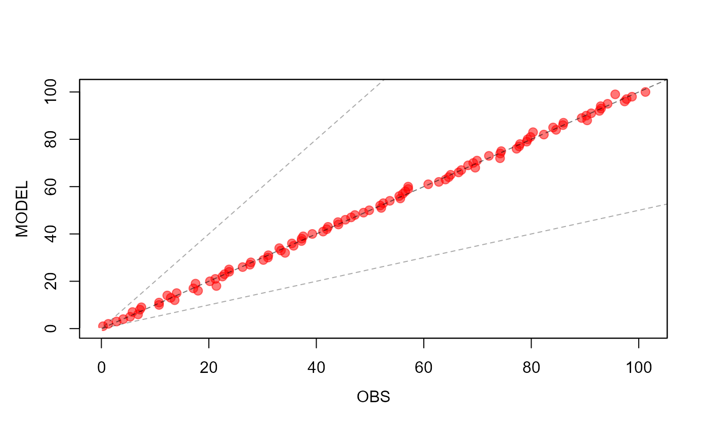

Calculate statistical indexes
stats(
mo,
ob,
spinup = 0,
wd = FALSE,
Mughal = FALSE,
scatter = F,
add = F,
cor = "#FF000088",
lim = NA,
cutoff = NA,
cutoff_NME = NA,
nobs = 8,
verbose = T,
...
)model
observed data
number of model points excluded to the statistic
logical, true for wind direction, see notes
logical, to use Mughal et al. (2017) for MB and ME for wind direction
set TRUE to plot a scatter plot
set TRUE to add the points to a scatter plot
color of scatterplot dots
scatter plot limits
(optionally the maximum) valid value for observation
(optionally the maximum) valid value for observation for NME
minimum number of observations
display additional information
extra arguments passed to scatter plot
MB and ME are calculated using Mughal et al. (2017) for wind direction
model <- 1:100
data <- model + rnorm(100,0.2)
stats(mo = model, ob = data, scatter = TRUE)

#> n Obs Sim r IOA FA2 RMSE MB ME
#> 1 100 50.41795 50.5 0.9992991 0.9996474 0.99 1.08387 0.08204697 0.8187027
#> GE MFB (%) MFE (%) NMB (%) NME (%)
#> 1 0.8187027 1.766894 4.224861 0.1627336 1.623832